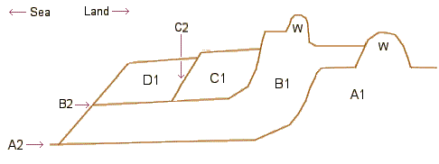

Basically there have been a series of periods of deposition which have laid down silty piles of material (labelled "1" on the diagram). These have then been cut into by the sea to produce the "2" surfaces. Bits of the old surfaces have survived, especially where they have been protected by various sea walls. Following the erosion in each case the next mass of material was deposited. Work at Caldicot Castle* suggests that unit A fills much of the lower Troggy1.
|  |
A: "Wentlooge Formation": Between 7.1 and 15m* thick. Dated internally to between the end of the last glaciation (~11-18000 years) and later than 2180 years ago (Carbon years: Info)*. Late-iron age / early Roman drainage landward of the wall suggests this date for its construction. B: "Rumney Formation": 0.8 to 2.2m. The wall appears to be pre-1588/89 CE*. Deposition seaward of the wall continued after its construction and only thinly covers Roman remains and Roman drainage is found between the two walls, possibly suggesting the area was originally protected by a Roman wall further out**. The inter-wall area is also an area of Medieval field systems*. C: "Awre Formation": up to 3m. Probably ending in 18th C as the surface has drainage from this period on it**. D: "Northwick Formation": modern material building up*. |